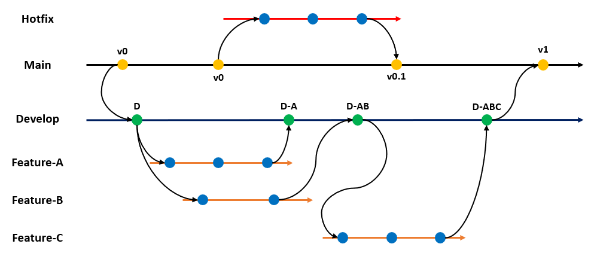

Git. Как добавить файлы в staging area?
Перетащите карточки, которые составят правильную команду:
Ваш ответ: [[1]] [[2]]
Возможные карточки:
Позиции:
Доступные варианты для перетаскивания:
Что такое коммит (commit) в Git?
Это команда для создания новой ветки в репозитории
Это команда, которая удаляет файл из репозитория
Это процесс слияния (merge) двух веток в Git
Это временное хранилище, где хранятся изменения перед добавлением их в репозиторий
Это снимок (snapshot) текущего состояния файлов в репозитории в определенный момент времени, сопровождаемый сообщением, описывающим внесённые изменения
Какая модель ветвления изображена?

Trunk-based
Gitflow
GitSimple
OneFlow
Нет правильного ответа
Вы переключились на ветку dev и внесли изменения. Что нужно сделать перед переключением на ветку master, если вы хотите сохранить эти изменения?
Выполнить git stash pop
Выполнить git push dev
Закоммитить эти изменения (git commit). Или использовать git stash, если не хотите коммитить сейчас
Ничего, Git автоматически сохранит изменения
Выполнить git merge dev
Вы написали отличное сообщение коммита, но случайно допустили опечатку. Какую команду можно использовать, чтобы исправить это сообщение?
git commit --rewrite -m "Новое описание"
git commit --amend "Старое описание" -m "Новое описание"
git commit -rewrite "Старое описание" -m "Новое описание"
git commit -m "Новое описание"
git commit --amend -m "Новое описание"
Какая команда используется для переключения между ветками в Git?
git push
git merge
git commit
git checkout
git branch
Вы сохранили изменения черезgit stash, затем изменили тот же файл в рабочей директории. Что произойдет приgit stash pop?
Git объединит изменения автоматически.Возникнет конфликт, который нужно разрешить вручную.Ваши текущие изменения будут удалены.Git предложит отменить изменения.Вы случайно удалили ветку experiment. Как восстановить ее последний коммит?Использовать git reflog для поиска хеша коммита.Выполнить git undo delete experiment.Скопировать хеш из лога удаленной ветки.
Это невозможно.
Что делает команда git merge?Удаляет ветку
Отправляет изменения в удаленный репозиторий
Создает новую ветку
Создает новый коммит
Объединяет изменения из одной ветки в другую
Что такое “конфликт” в Git?
Ситуация, когда два пользователя пытаются отправить изменения в одну и ту же ветку одновременно
Ошибка в коде
Ситуация, когда Git не может автоматически слить изменения из двух разных веток
Ситуация, когда удаленный репозиторий недоступен
Какая основная цель использования веток в системе контроля версий, такой как Git?
Ускорение работы команды
Разработка новых функций, исправление багов и проведение экспериментов, не влияя на стабильность основной кодовой базы
Улучшение скорости работы с Git
Увеличение размера репозитория
Объединение нескольких репозиториев в один
Какой этап жизненного цикла следует после «Проектирования»?
Тестирование
Разработка
Сопровождение
В чем основная разница между локальным и удаленным репозиторием в Git?
Локальный репозиторий хранит только исходный код, а удаленный репозиторий хранит только скомпилированный код
Локальный репозиторий хранится на сервере, а удаленный репозиторий – на вашем компьютере
Локальный репозиторий используется для тестирования кода, а удаленный репозиторий – для развертывания в продакшн
Удаленный репозиторий содержит только историю изменений, а локальный репозиторий – только текущую версию кода
Локальный репозиторий хранится на вашем компьютере, а удаленный репозиторий – на сервере, позволяя обмениваться кодом с другими разработчиками и хранить резервные копии
Что такое Scrum?
Фреймворк (framework) для реализации Agile, использующий спринты, роли (Scrum Master, Product Owner, Development Team) и ритуалы (Daily Scrum, Sprint Planning, Sprint Review, Sprint Retrospective)
Строгий каскадный процесс, который необходимо соблюдать для всех этапов разработки ПО, чтобы избежать ошибок
Язык программирования
Язык программирования, который позволяет быстро создавать масштабируемые приложения с использованием искусственного интеллекта.
Система, в которой команда разработчиков работает изолированно, не общаясь с Product Owner’ом, так как Product Owner все равно ничего не понимает в технической стороне, и его задача - просто согласовывать конечный результат
Какие директивы препроцессора обычно используются вместе для создания “header guards” (защиты от множественного включения) в C/C++?
#include, #define, #endif
#ifdef, #else, #endif
#ifndef, #define, #endif
#pragma once, #include
Можно ли переключиться на ветку, в которой есть незакоммиченные изменения, которые конфликтуют с содержимым текущей ветки?
Нет, Git выдаст ошибку, так как переключение приведет к потере изменений или созданию конфликта
Да, Git переключится на ветку и перезапишет все локальные изменения
Да, Git автоматически разрешит конфликты
Какой файл содержит информацию об игнорируемых файлах и папках в репозитории?
Введите одно слово, если необходимо используйте знаки .!?* без пробелов (но если вы забудете ответ все равно зачтется)
Регистр неважен
Правильный ответ: .gitignore, gitignore
Регистр букв не учитывается